Learn at your own pace with AI-tailored content.
Product02 / 03
Al Siraat
Turning a crowded Quran utility app into an AI learning product, now used by over a million people.
- 1M+Google Play downloads
- 4.8★Play rating · 4.4K reviews
- 4.7★App Store rating
- 9Languages
01Context
Read less. Learn more.
Most Quran apps help you read. Very few help you learn.
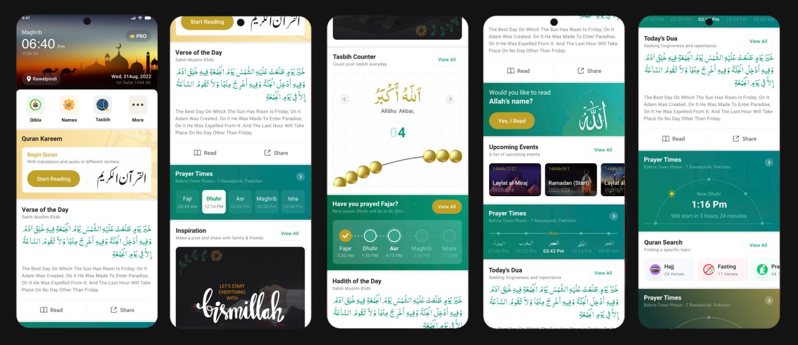
02The problem
Everything. Optimised for nothing.
03Research
Learning from the AI-Quran space.
- 01AI feedback wins
Recite, get corrected, improve. That loop brings people back daily.
- 02Beginners need an on-ramp
Apps that started at full recitation lost first-time learners. An alphabet-first Qaida track was essential.
- 03Progress drives habit
Streaks, mistake logs and trackers turn learning into a routine.
04Process · 9D JAM
Design together. Decide fast.
A team design sprint: map old modules to the new structure, draw the flows, then sketches → wireframes → high fidelity.
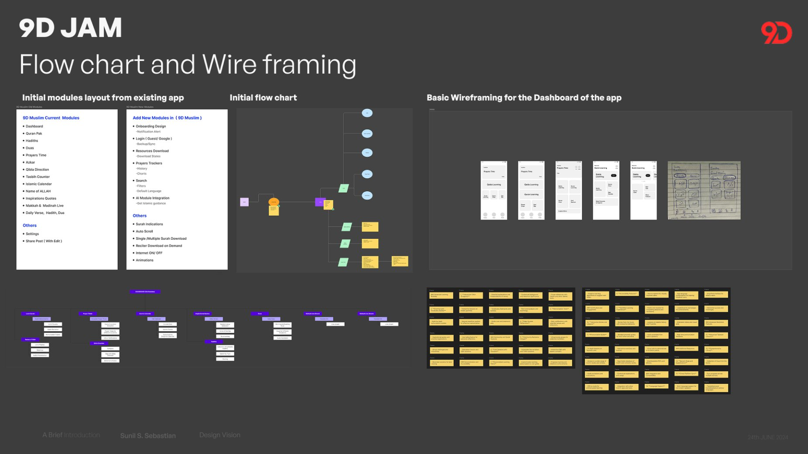
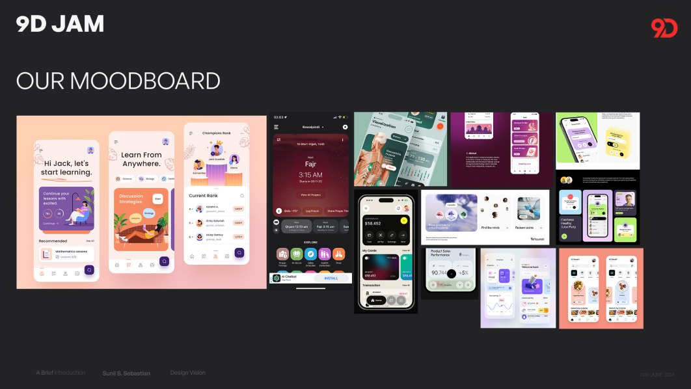
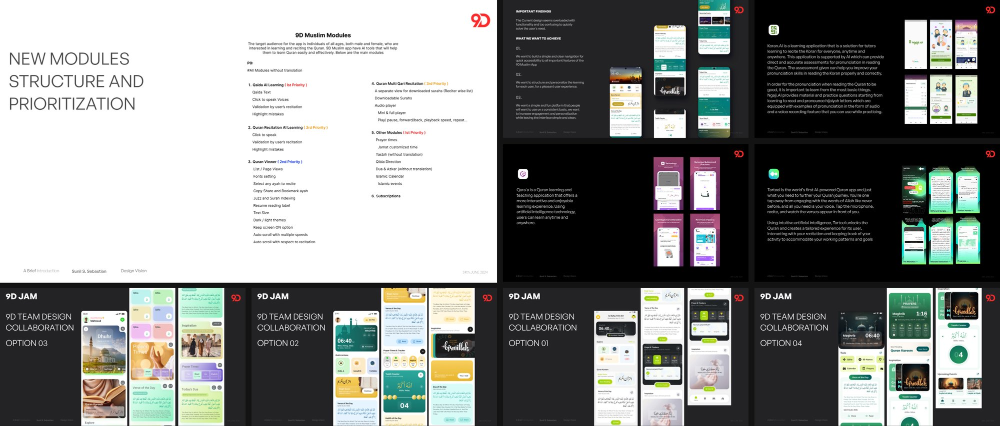
05Four directions
Options, side by side.
Each designer explored one direction for the new home. Seeing them together made the trade-offs obvious.
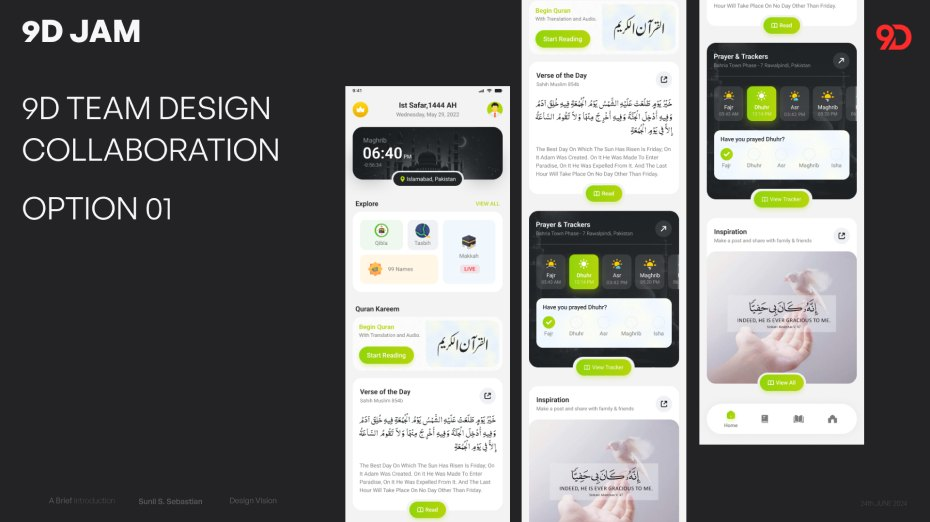
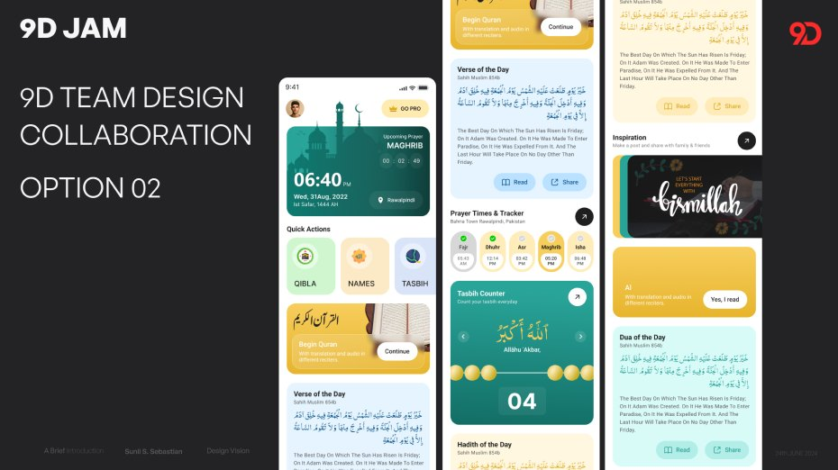
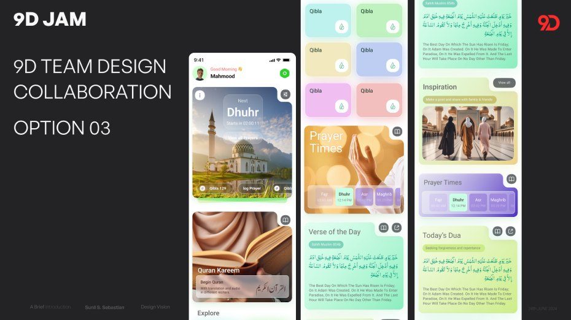
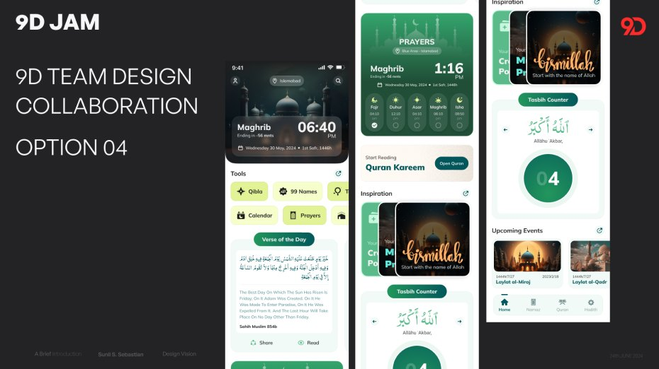
06The breakthrough
"Salam! Learn with AI."
We stopped treating home as a tool launcher. Qaida and Quran learning became the two hero cards; worship tools moved to a supporting layer. A dozen layouts later, it clicked.
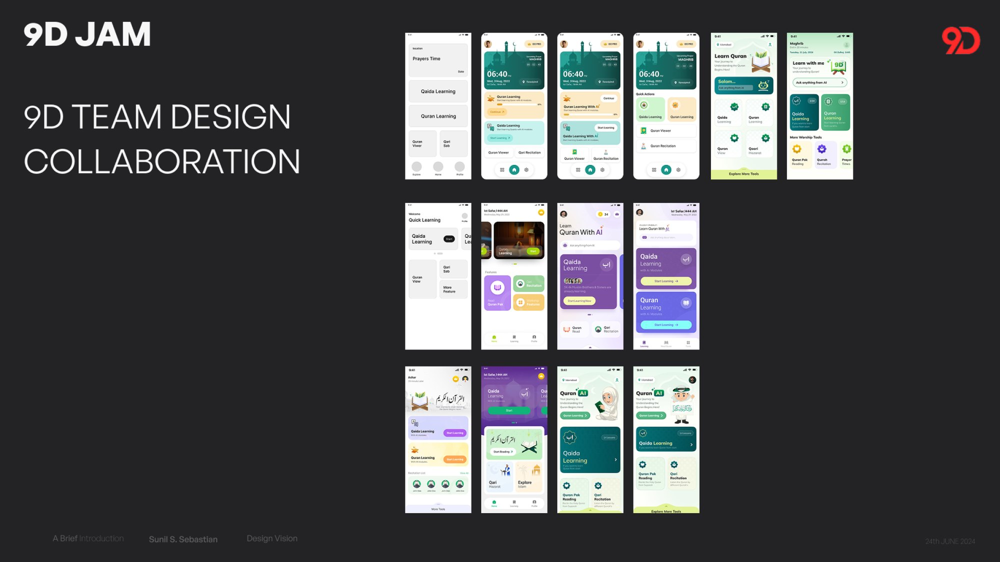
07Three visual systems
Compare systems, not vibes.
The leading direction, built three times with its own palette, gradients and type, applied to the same screens.
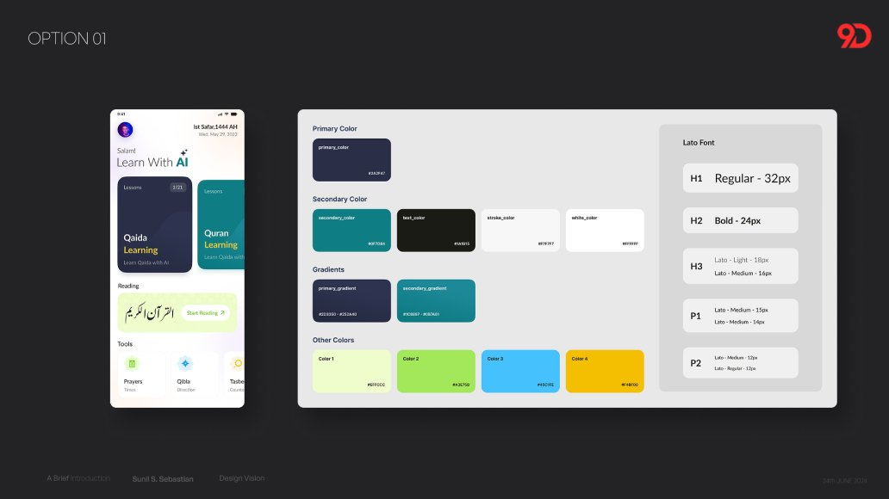
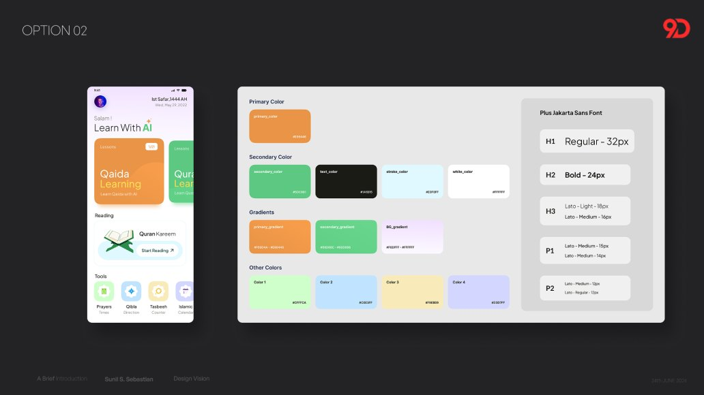
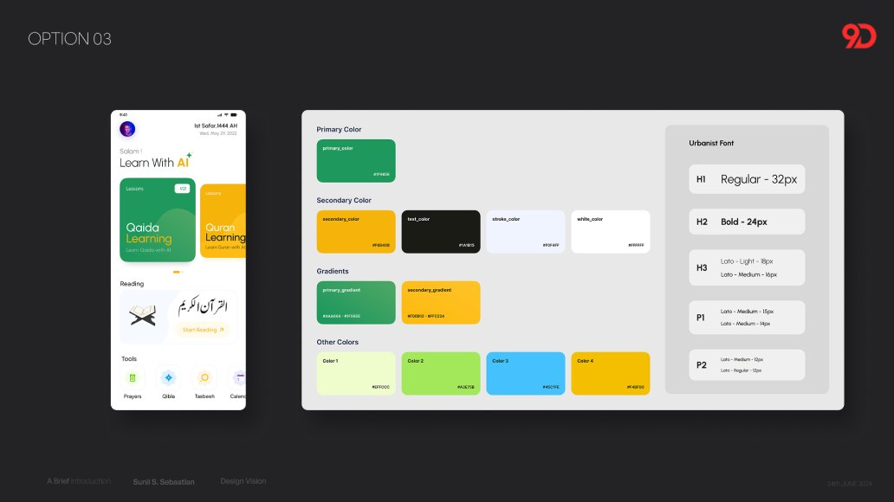
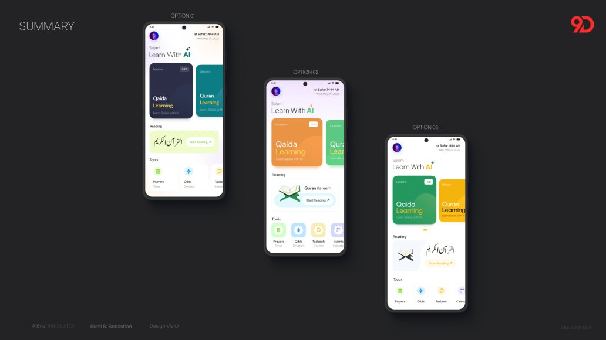
08Brand identity
Al Siraat. The straight path.
Not a collection of tools. Guidance along a path.
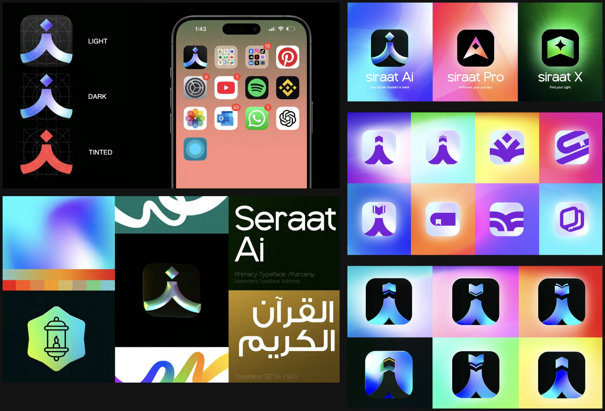
09The product, live
Recite. Get corrected.
The real app flows, as they run in the shipped product: pick a surah, track your progress, then recite while the AI listens.
AI QaidaTap a letter. Say it. Hear it back.
- 01Choose a surah or a Qaida lesson
- 02Tap and hold the mic, then recite
- 03The AI marks mistakes and Tajweed in real time
- 04Earn badges and track progress

10What we shipped
A personal AI tutor. 24/7.
Launched on a freemium model and still shipping: audio while learning, Qaida articulations, Ramadan theming, home-screen widgets and more.
- 01Real-time mistake detection
The AI listens to recitation, highlights errors instantly and corrects on the spot.
- 02Pronunciation & Tajweed
Feedback on pronunciation and Tajweed while you recite.
- 03Interactive AI Qaida
A beginner track from Arabic letters and sounds up to fluent reading.
- 04Adaptive lessons & rewards
AI-tailored paths, daily limits that build consistency, progress insights and rewards.
- 05World-renowned Qari audio
Listen and compare against masters like Abdul-Basit and Al-Sudais, with a mistake log.
- 06Essential Islamic tools
Prayer times, Qibla, Tasbih, calendar, Duas and Azkar. Kept, now decluttered.
Daily progress unlocks badges and streaks.
See growth and focus where it matters.
Real-time correction from Al Siraat AI.
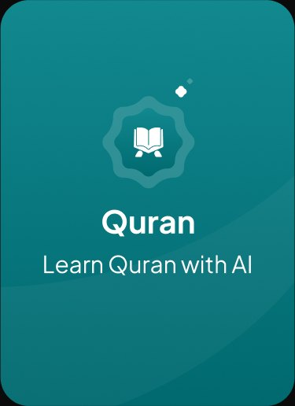
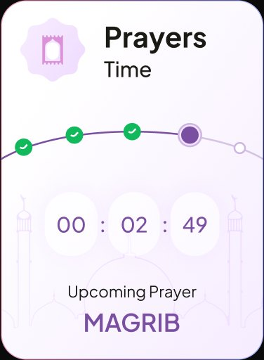
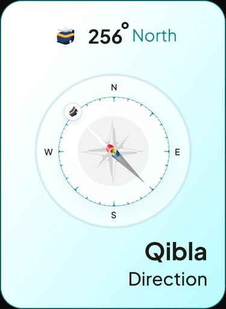
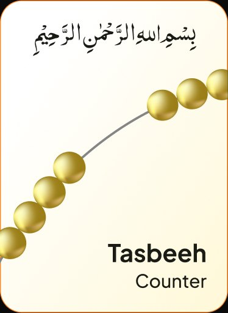
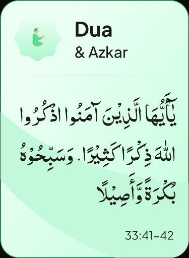
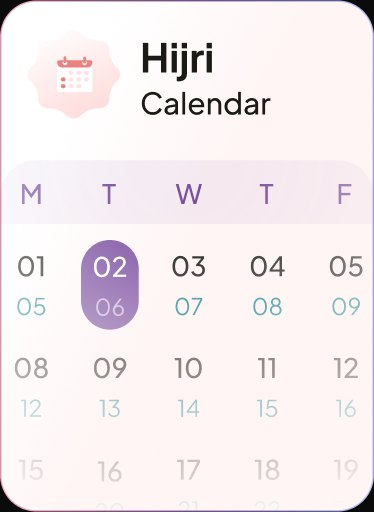
11Reflections
What it taught me.
- 01Subtraction is a strategy.
The biggest decision wasn't adding AI. It was demoting a dozen features so two learning journeys could lead.
- 02Prioritisation is a deliverable.
The P1 / P2 / P3 module structure aligned design, engineering and business, and the shipped product followed it.
- 03Options beat opinions.
Four dashboard directions and three full style systems turned debates into structured decisions.
- 04A rename is a product decision.
"Al Siraat, the straight path" states the product's promise in two words.
"The current design seems overloaded with functionality and too confusing to quickly solve the user's need."My UI analysis, June 2024